If you want to see tutorial in a separate web browswer window click here.
Positioning on Screen Part II
We can't place a sprite in the room we have to bind it to an game object.  Right click on Object and select Create Object. Call this object obj_triangle. Press the button that says No Sprite and pick the spr_triangle sprite from the drop down menu.
Right click on Object and select Create Object. Call this object obj_triangle. Press the button that says No Sprite and pick the spr_triangle sprite from the drop down menu.

Now lets create an object for the square.  Right click on Object and select Create Object. Call this object obj_square. Press the button that says No Sprite and pick the spr_square sprite from the drop down menu.
Right click on Object and select Create Object. Call this object obj_square. Press the button that says No Sprite and pick the spr_square sprite from the drop down menu.

Now lets create an object for the circle.  Right click on Object and select Create Object. Call this object obj_circle. Press the button that says No Sprite and pick the spr_circle sprite from the drop down menu.
Right click on Object and select Create Object. Call this object obj_circle. Press the button that says No Sprite and pick the spr_circle sprite from the drop down menu.

Note: Please note a consistency here. We are naming all objects with prefix obj_ and all sprites spr_. This is because we can't have two files with the same name. We might have various different types of assets with the name circle (for example). This allows us to share a name but not have a problem with collision on two game items with the exact same name. It also makes it easier to figure out which sprite goes with which objects. In a small object like this it is simple, but if we had 200 sprites and objects this would be harder to tell without following a consistent naming convetion.
 Double left click rm_data_types and drag the triangle, circle and square into the room around where you think line 25 lies by eye.
Double left click rm_data_types and drag the triangle, circle and square into the room around where you think line 25 lies by eye.
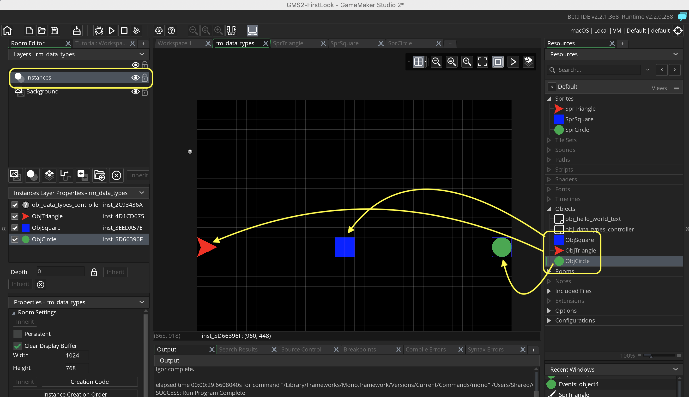
Run the game again by pressing the  Play Button. We should see the three shapes but it are not exactly in the center of the line like in our target drawing.
Play Button. We should see the three shapes but it are not exactly in the center of the line like in our target drawing.

Now we want the objects to be over the line 25 we have drawin the obj_data_types_controller and look to see how many pixels each line_height was. In my case it is 22.
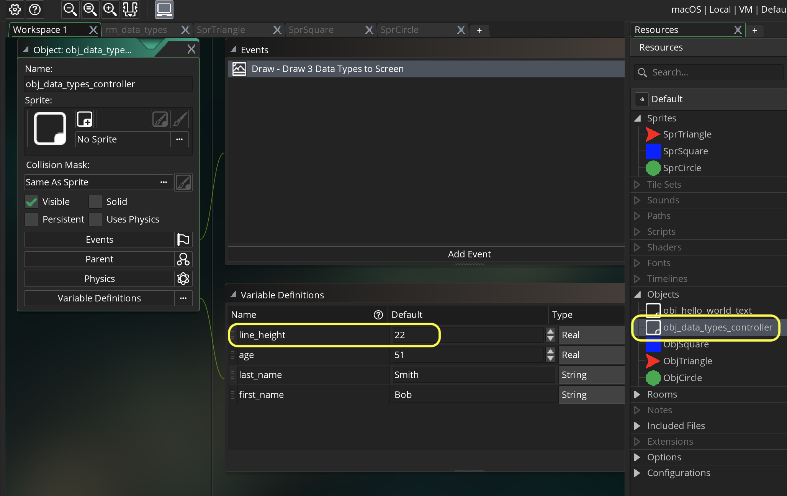
 Double left click obj_triangle and we need to add a variable to this object. Press the Variable Definition button on the game object.
Double left click obj_triangle and we need to add a variable to this object. Press the Variable Definition button on the game object.
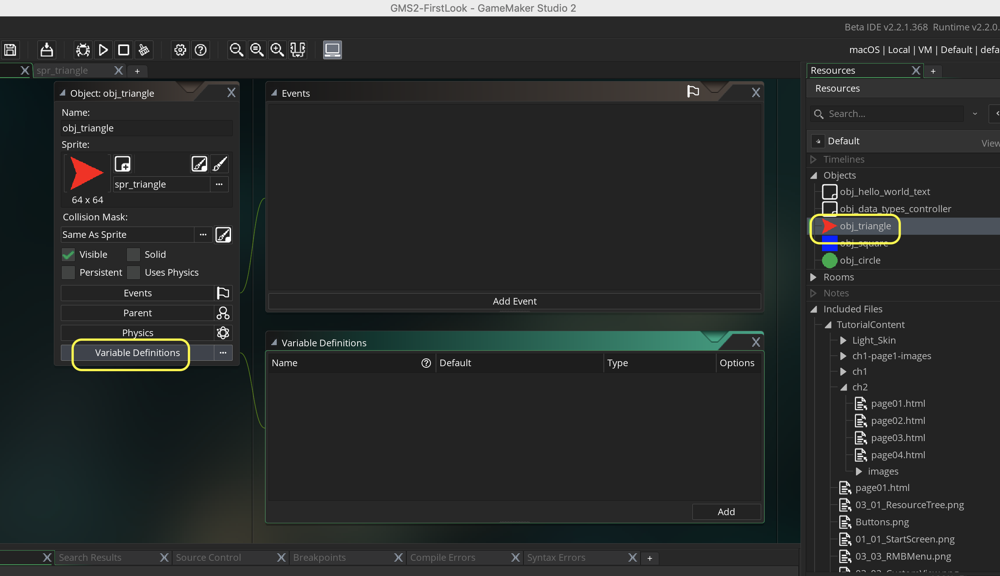
Press the Add button and call the variable line_height and set the Default value to 22. Make sure the Type is a Real number.
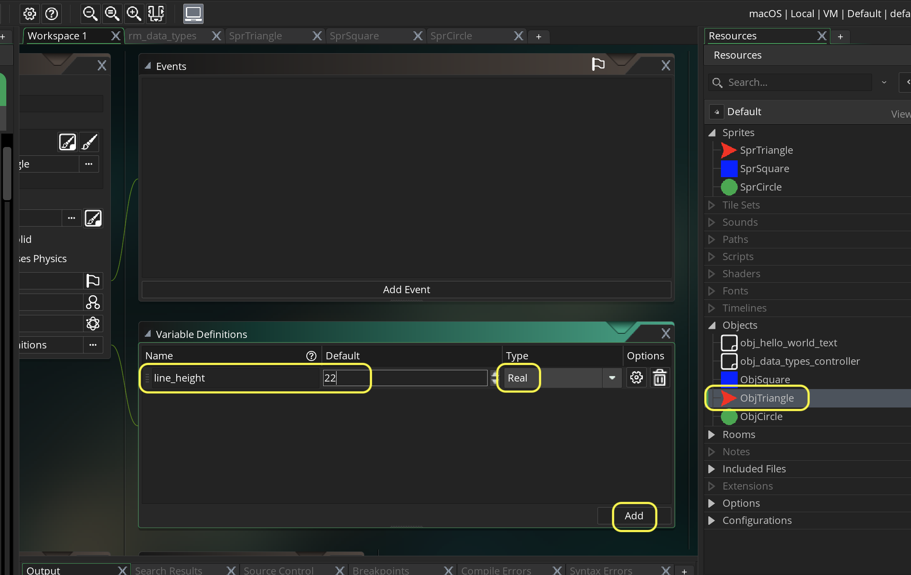
GameMaker uses an event system to run its scripts. We have already used the Draw event to draw the text and lines in this room. The draw event runs every frame.
We will take a look at two more event types:
Create Event & Step Events
The Create Event runs only one time when the object is instantiated (when it appears in the room). This could be at the game start if the object is placed in the Room; or it could be run once when it is instantiated through code. This is the perfect time to set up the inital value for a variable. Please note that this will be shared amongst all instances, if you want a separate value for a specific instance use the editor in the room to adjust the variable value. The room settings run after the Create Event and will override what is placed there.
The Step Event is the main game loop. It runs every frame when the game is running. The code attached to this event runs every tick. Typically we instantiate variables in the Create event and run ai and gameplay in the step event. The step event (like the draw event) runs every frame so be careful to use it for something that needs to be updated 30+ times a second.
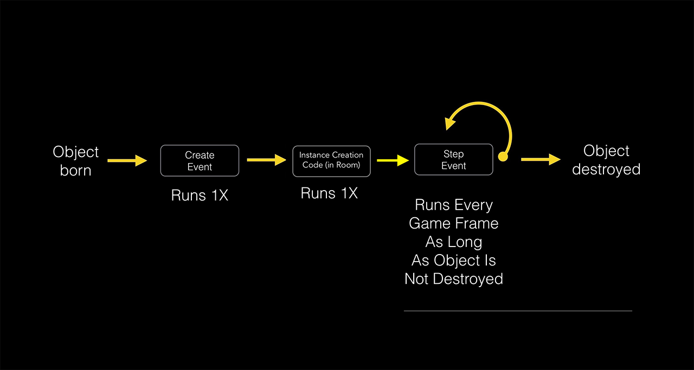
For positioning the objects in the room we will use the create event. We only need to do this once and there is only a single instance of each object (don't need to do it in the room).
Double click on obj_triangle and press the Events button then press the Add Event button. In the menu select Create event. Scroll over to the scipting window that flew out.

Now we want the obj_triangle to be on the twenty fifth line (25 * line_height or 25 * 22). On the x-axis we want it on the left hand side of the screen. Remember 0,0 is the top left corner so we want to be 0 on the x-axis:
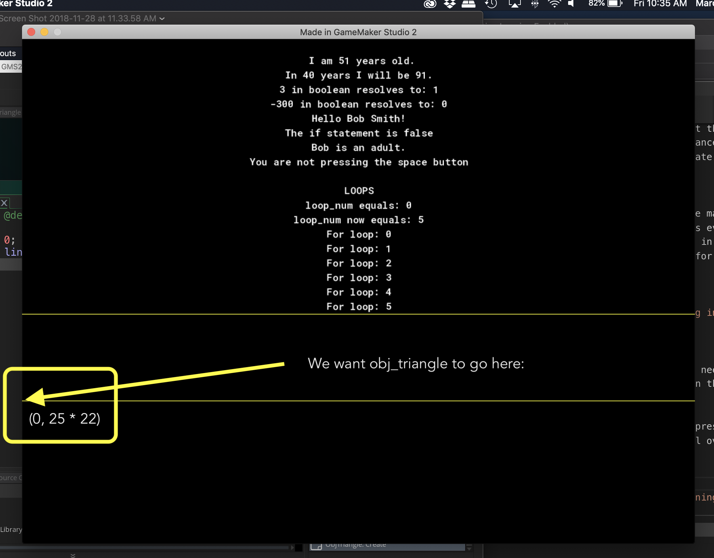
In scripting we are adjusting two variables that come with every object. All objects have a built in x and y variable that represent their 2-d position in the room.
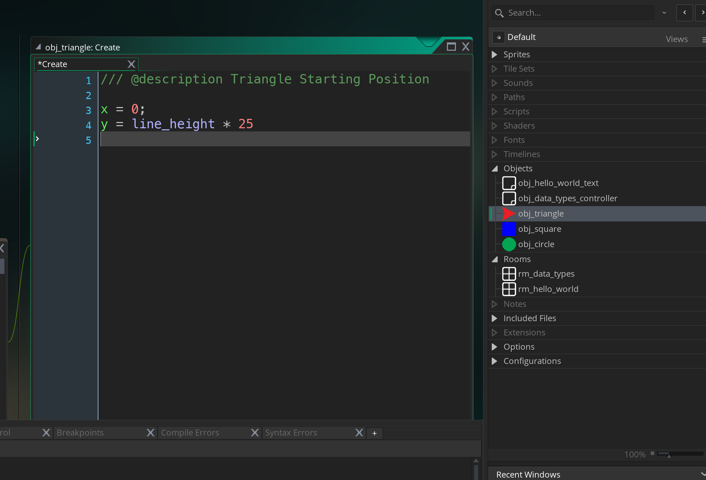
Run the game again by pressing the  Play Button. Now we should see the triangle in the correct position on the x-axis but it is below the line as opposed to being centered on it.
Play Button. Now we should see the triangle in the correct position on the x-axis but it is below the line as opposed to being centered on it.

The game bases everything on the object's origin. This is a single point relative to the object (it can be anywhere relative to the object, even outside of the sprite itself). The default position if you do not make any changes is the top left corner of the sprite. The world position of the sprite is it's location in the room (0, 25 * line_height) but it's local origin position is (0, 0).
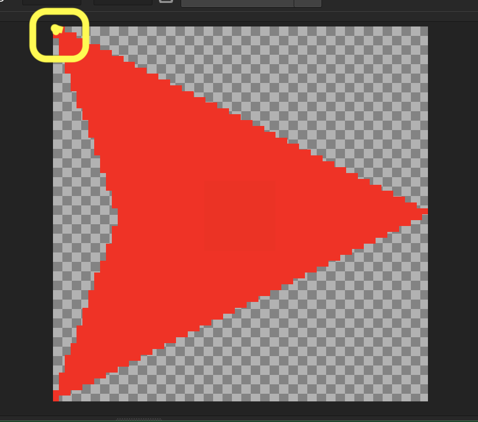
The good news is that we can change the origin. Open spr_triangle and click on the drop down menu that says Top Left. Select Middle Center instead. Look at the target reticule update automatically:

Run the game again by pressing the  Play Button. Now the vertical positioning is better but half the ship is off the screen to the left. It placed the origin of the sprite at 0 on the x-axis.
Play Button. Now the vertical positioning is better but half the ship is off the screen to the left. It placed the origin of the sprite at 0 on the x-axis.
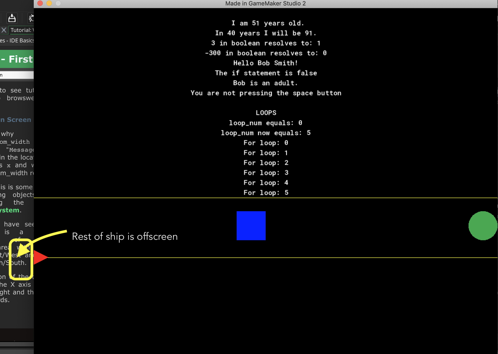
Now we need to compensate for where the sprite's origin is located. It is located at (32, 32) which is half the sprite_width. So we can adjust x to be 32.
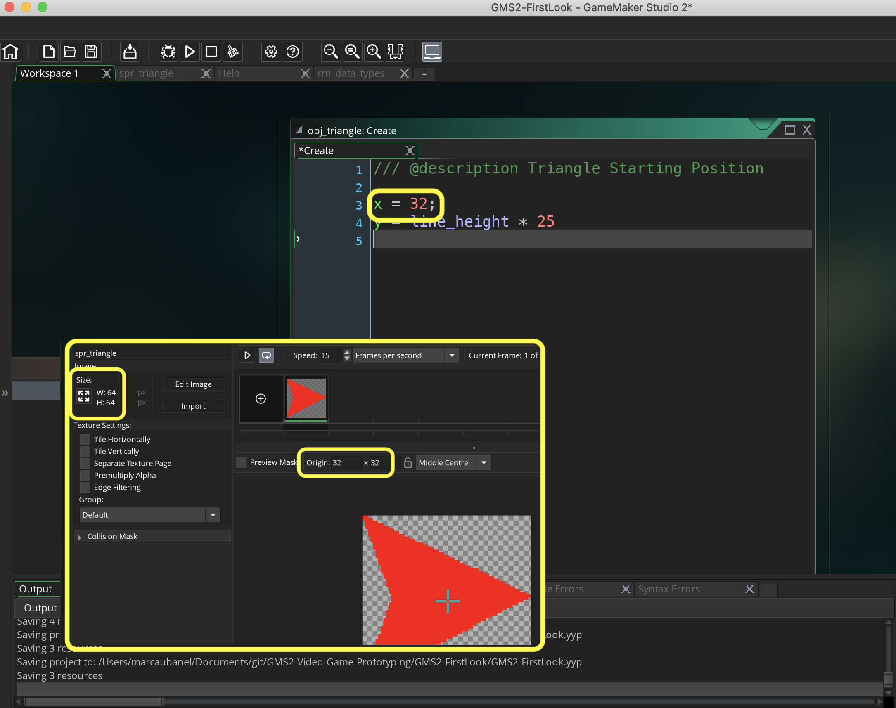
Run the game again by pressing the  Play Button. Now the triangle should be properly placed both horizontally and vertically.
Play Button. Now the triangle should be properly placed both horizontally and vertically.
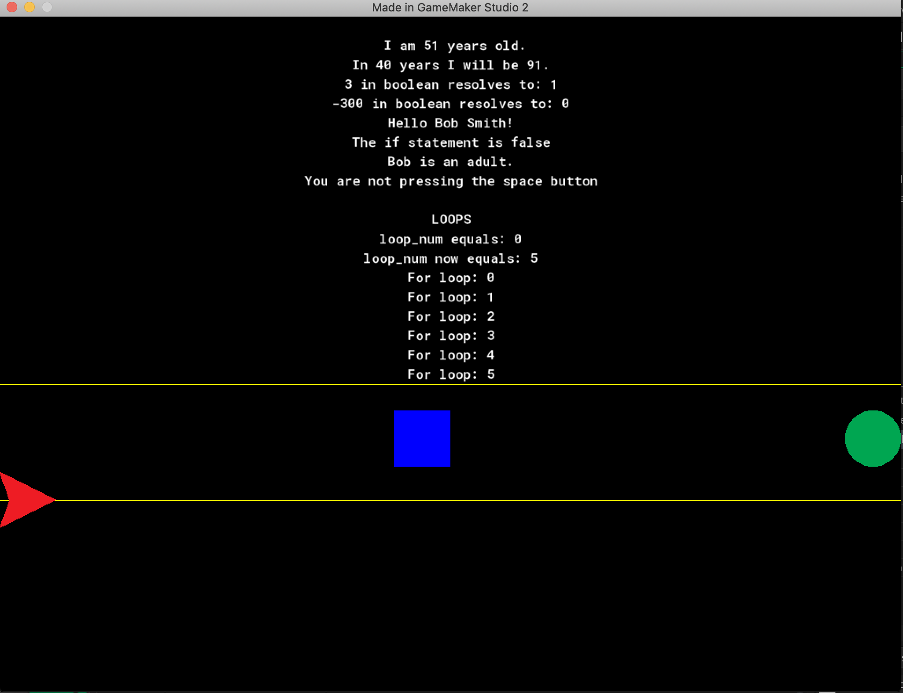
What if down the road I wanted to make a change and have the sprite be 32 x 32 pixels. Then I would have to change this value. There is a way to not hard code this value and have it change with the sprite_width.
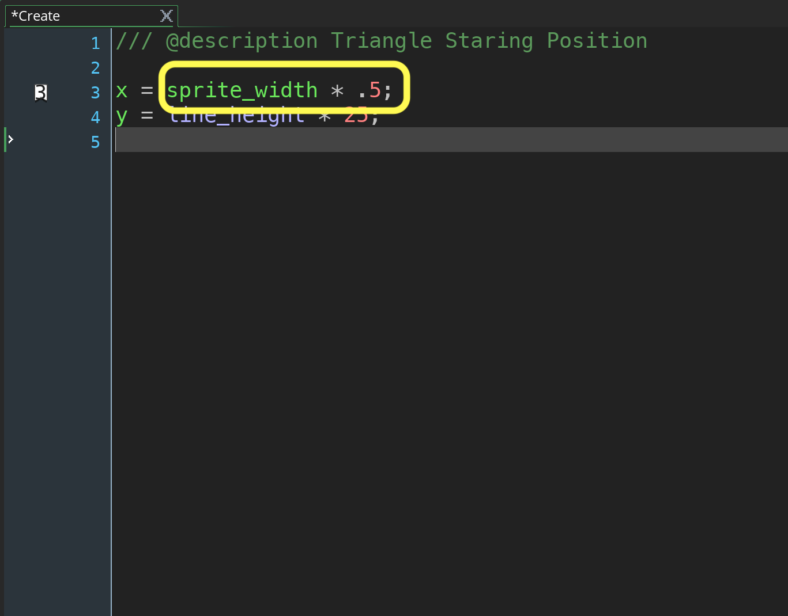
Run the game again by pressing the  Play Button. It should look identical as we just converted that real number into a variable.
Play Button. It should look identical as we just converted that real number into a variable.
Lets do the same thing with obj_square. Let's start by cliciking on the Variable Definitions button and press Add and name the variable line_height and set the Default value to 22

Press the Add Event button and select a Create event.
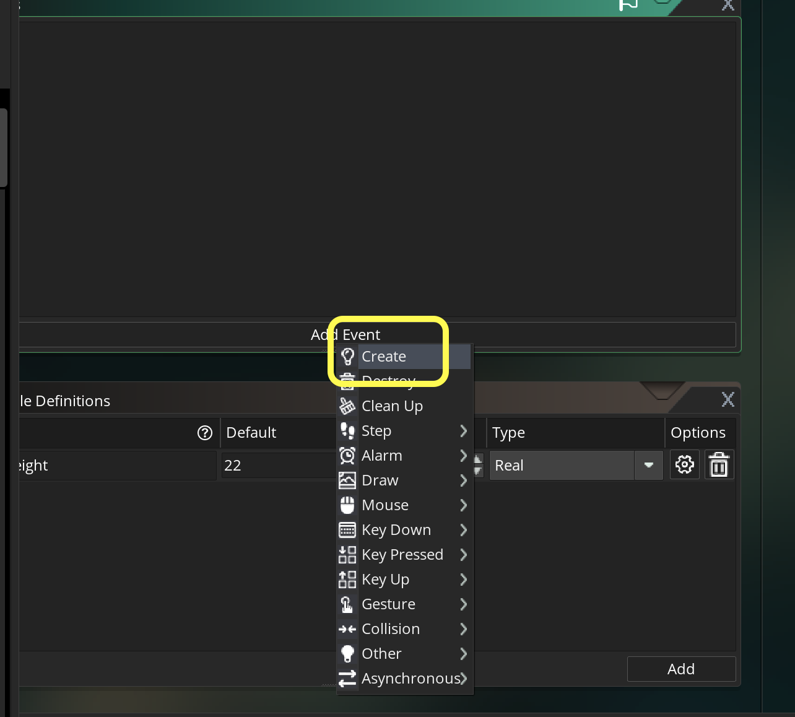
In this case we want the middle of the room and we can divide the room_width variable by 2 (or multiply by 0.5). The y value will be the same as obj_square.
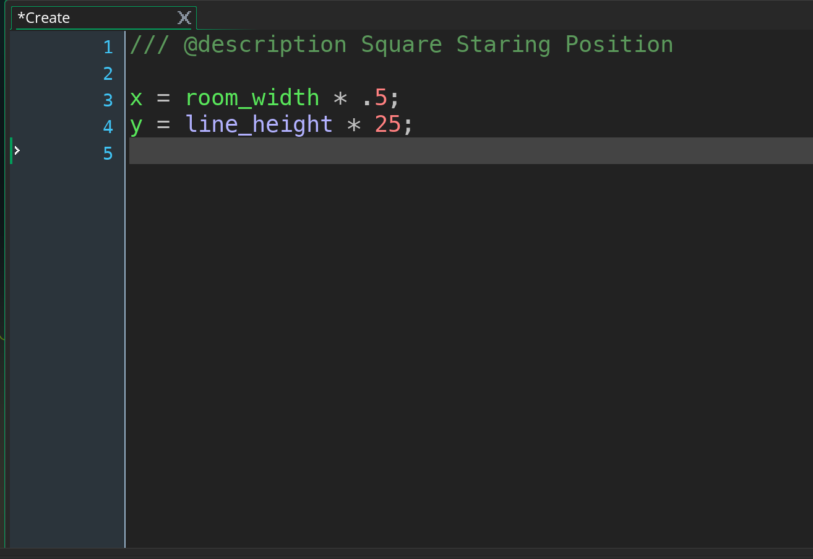
Run the game again by pressing the  Play Button. We notice that it has the same problem that it is positioned based on it's top left corner.
Play Button. We notice that it has the same problem that it is positioned based on it's top left corner.
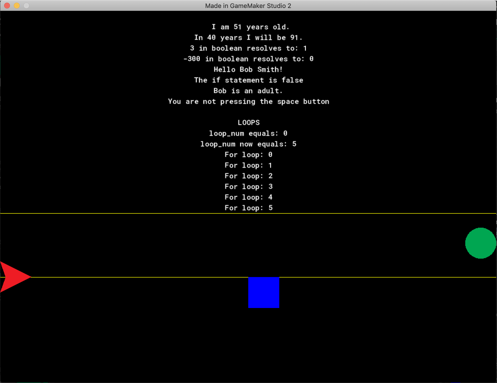
Now there are other reason's besides positioning the sprite to adjust the origin. Another consideration is when we want to rotate the sprite. On the next page we will see how origin affects rotation.